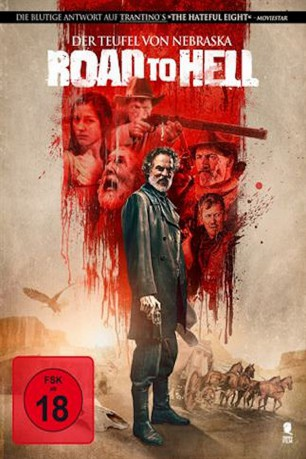

#7994 Road to Hell
 gesehen am 03.02.2018
gesehen am 03.02.2018
 
 IMDB-Wertung: 5.4 / 10
IMDB-Wertung: 5.4 / 10  Metascore: 0
Metascore: 0 
Einige Zeit nach dem Bürgerkrieg begeben sich die beiden hübschen Schwestern Mestiza und Rose auf den Weg durch den unbewohnten Westen Amerikas. Der letzte Wille ihres verstorbenen Vaters führt sie in diesen kargen Landstrich. Als ihre Postkutsche Halt an der Black Hell Station macht, wird diese plötzlich zum Ziel eines Angriffes. Dahinter steckt der sogenannte „Colonel“ mit seinen Männern aus Nebraska. Ihr Überfall trifft die Station nicht zufällig – der sadistische und gnadenlose Anführer hat es nämlich auf einen außerordentlich wertvollen Schatz abgesehen und würde alles tun, um diesen in seine Händen zu bekommen. Für die fehlenden Informationen schrecken der Colonel und seine treue Bande auch nicht vor brutaler Folter zurück.
Jahr: 2016
Dauer: 89 Minuten
FSK: 18
Land: Spanien Studio: Tiberius FilmTonspuren:
Untertitel:
Auflösung: 1080p (1920x784) Größe: 3174 MB
Genre: Thriller, Horror, Krimi, Western
Regisseur: Víctor Matellano
Drehbuch: Nana Ekvtimishvili
Soundtrack: José Ignacio Arrufat
Darsteller:
- Nadia de Santiago als Rose
- Tábata Cerezo als Mestiza
- Enzo G. Castellari als
- Maarten Dannenberg als Red
- Antonio Mayans als
- Tania Watson als
- Karlos Klaumannsmoller als
- Guillermo Montesinos als Joe
 Conrado San Martín als (archive footage)
Conrado San Martín als (archive footage)- Pablo Scola als El Coronel
- Ramón Langa als Vigilante del Oro
- Manuel Bandera als Tim Rogers
- Veki G. Velilla als Anne
- Marta Fenollar als
- Denis Rafter als Ernest
- Andrea Bronston als Miss Whitman
- Fernando Valdivielso als
- Víctor Vidal als
- Armando Buika als
- Larry Tayles als
- Elvira Moliterno als
- Gabriel Matellano als
- Jorge Quesada als
Datei: X:\FSK18-Western\Road to Hell (2016, FSK18, 1920x784).mkv seit 09.01.2018
Festplatte: FSK18
 Es gibt insgesamt 25 Filme in der Gruppe 'FSK18-Western'
Es gibt insgesamt 25 Filme in der Gruppe 'FSK18-Western'